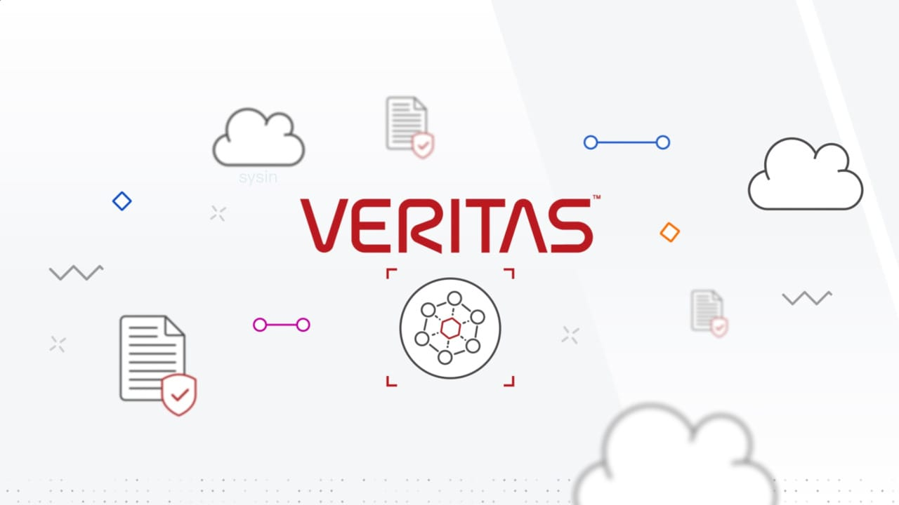

请访问原文链接：Veritas Enterprise Vault 15.1 (Windows) - 自动捕获数据并归档信息 查看最新版。原创作品，转载请保留出处。

作者主页：sysin.org
Enterprise Vault
独家技术打造的归档功能，确保企业决策有据可依、始终合规，全面掌控数据

产品概述
满足严苛的监管要求
Enterprise Vault 可捕获所有通信平台的信息，将数据从本地无缝迁移到云端，同时可自动识别最相关的内容以确保合规 (sysin)。全球受高度监管的行业依靠 Enterprise Vault 获取深入数据洞察和可操作的情报。
轻松准确优化合规能力

捕获一切内容
社交媒体内容、团队协作内容、电子邮件、即时短消息 (sysin)，甚至是视频和语音通信。

随时随地归档
自动分类数据并保留对企业最重要的数据。

发现关键内容
快速查找相关数据以应对发现、监管、隐私和法律挑战。
Veritas Surveillance
该强大的全新合规工具可减少监控电子通信和电子邮件归档所产生的相关成本和工作量。
- 分类式监管功能内建 250 多个策略和 1100 多个预设模式，有助于用户识别特定数据
- 基于人工智能的透明智能审查可检测语言并分析情绪 (sysin)，深入洞察项目相关性
- 在审查期间标记相关项目并利用内置的警报升级工作流程来处理紧急的警报
120 多个内容源
Enterprise Vault 可与行业最稳健的数据摄取引擎 Veritas Merge1 集成。
- 完全集成 Merge1，实现无与伦比的数据可视化和数据掌控力。
- 捕获社交媒体内容、团队协作内容、即时短消息 (sysin)，甚至是视频和语音通信
- 定期添加新内容源和功能

对关键信息进行分类
归档数据时，对内容数据进行分类并呈现相应的上下文信息。
- 包含数百个预配置的策略和模式。
- 使用元数据标记项目，加速监督、搜索和发现速度。
- 使用高级搜索技术（包括面部和情绪分析）来查找个人数据、敏感数据、新冠疫情数据、勒索软件等
了解详细信息：https://www.veritas.com/zh/cn/solution/veritas-classification
灵活部署
Enterprise Vault 可灵活归档任意环境中的数据。
- 保留数据的目标位置可选择本地、公有云或混合配置。
- 运用现有的本地存储，还可将数据大规模迁移至云。
- 定义策略，指定数据存储的位置和保留时间 (sysin)
- AWS S3 Glacier Instant Retrieval 存储分类适用于数据需要长期保留、不经常进行限时检索的归档情况
信息归档领域公认的顶级厂商
2023 年 Radicati Group 市场象限报告
Veritas Technologies 是信息归档领域公认的顶级厂商
阅读报告：https://www.veritas.com/form/whitepaper/radicati-market-quadrant-for-information-archiving
遵守主要监管机构的条例要求
保留通信以应对公司治理规定，支持 IT 法务部门电子发现现调查，以及满足其他的行业条例规定。

金融
SEC、FINRA、CFTC、SOX、APRA、MiFID II、IIROC、ESMA

制药与医疗
FDA、HIPAA、FDCA、ARRA

政府机构与隐私合规
FOIA、FISMA、CCPA、GDPR

能源和公共事业
FERC、DOE、NERC、CFTC、州法规
Enterprise Vault 的新增功能
最新的版本更新，让您以更安全、更高效的方式管理归档数据，包括：
- 访问受限的只读管理员角色可监控和跟踪任务进度
- PowerShell cmdlet 可自动将索引整合到数量更少的新服务器上
- 可随机搜索、抽取 Microsoft Teams 聊天和频道内容
- 基于情绪分数搜索和抽取 (sysin)
- 分类策略包含个人和敏感数据、美国数据保护法和医疗诊断
系统要求
包含在下载中。
下载地址
Veritas Enterprise Vault 15.0.0 Windows Multilingual
Veritas Enterprise Vault 15.1.0 Windows Multilingual
相关产品：Veritas NetBackup 10.5 (Unix, Linux, Windows) - 领先的企业备份和恢复解决方案

文章用于推荐和分享优秀的软件产品及其相关技术，所有软件提供免费版或试用版。内容若侵犯了您的版权，请联系作者删除。如果您喜欢这篇文章，或者觉得它对您有所帮助，亦或发现有不当之处；欢迎发表评论，也欢迎分享这个网站，或者赞赏一下，谢谢！提示：捐赠或赞赏属于自愿赠予行为，提交后即表示您对作者的支持与认可。为避免误操作，请在确认前仔细检查金额，支付完成后将无法撤销或退还。
 支付宝赞赏
支付宝赞赏  微信赞赏
微信赞赏赞赏一下
敬请注册！点击 “登录” - “用户注册”（已知不支持 21.cn/189.cn 邮箱）。 请勿使用联合登录（已关闭）。